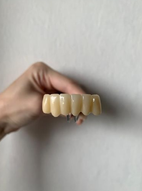
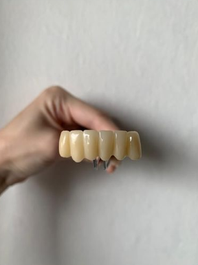
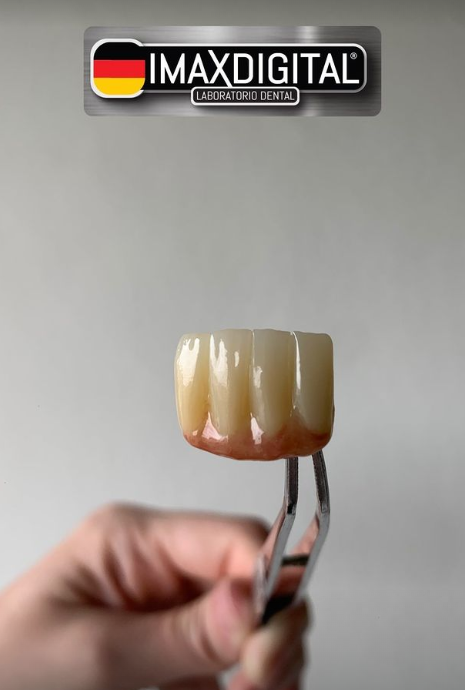
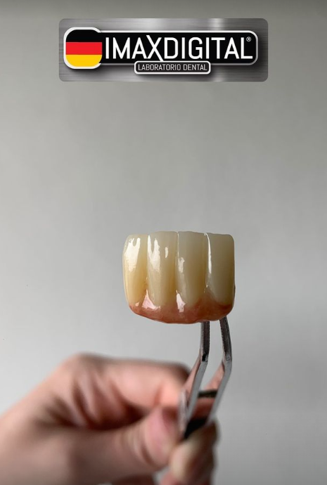

Quiénes Somos

En IMAX Digital, nos dedicamos a proporcionar servicios dentales de la más alta calidad combinando tecnología de vanguardia con la experiencia y habilidad artesanal de nuestros especialistas. Nuestro equipo, liderado por el Dr. José Armando, se esfuerza por garantizar que cada paciente reciba un tratamiento personalizado y excepcional.
Nuestro compromiso es con la excelencia y la satisfacción del paciente, ofreciendo una amplia gama de servicios que incluyen coronas, incrustaciones, carillas y puentes dentales.


 

 
